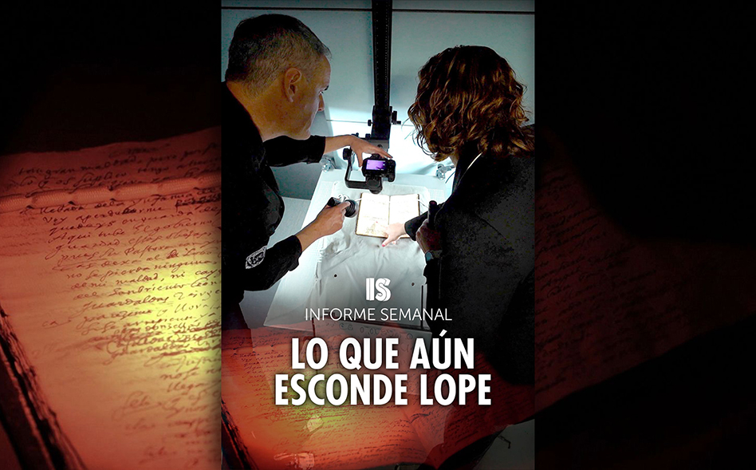
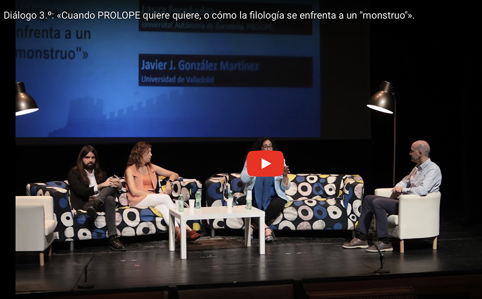
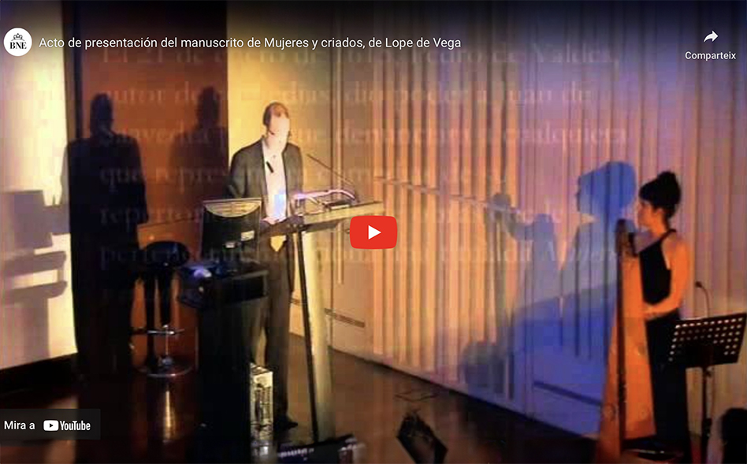
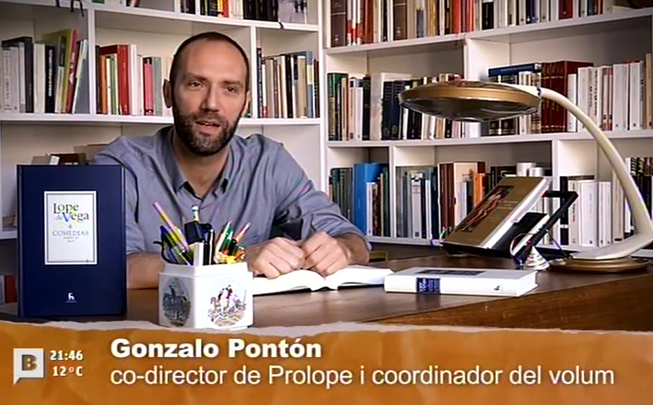

Documentales, entrevistas y material audiovisual relacionados con la investigación de PROLOPE sobre Lope de Vega y el teatro del Siglo de Oro.

Informe Semanal: Lo que aún esconde Lope
En vísperas del Día del Libro, Informe Semanal se sumerge en los archivos de la Biblioteca Nacional y en las entrañas de la creación de Lope de Vega. Técnicas forenses como la fotografía espectral o la Inteligencia Artificial descubren nuevos detalles de su proceso creativo.

17 Jornadas sobre teatro clásico de Olmedo: «Cuando PROLOPE quiere quiere»
Diálogo 3.ª de las 17 Jornadas sobre teatro clásico («Lope sin fin»), con Sònia Boadas, Daniel Fernández Rodríguez, Laura Fernández y Javier J. González Martínez.

Biblioteca Nacional de España: Acto de presentación del manuscrito de Mujeres y criados
Con Alberto Blecua, director de PROLOPE; José Manuel Martos, director de Gredos; Rodrigo Arribas, presidente de la Fundación Siglo de Oro; y Alejandro García Reidy, Universidad de Syracuse.

Qwerty BTV: Dos nuevos volúmenes de las comedias de Lope de Vega
La Editorial Gredos ha publicado dos nuevos volúmenes de la edición crítica completa de las comedias de Lope de Vega. Qwerty entrevista a Gonzalo Pontón, co-director de PROLOPE.